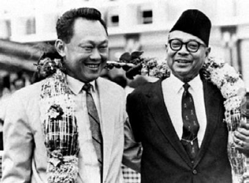

With Prime Minister Harold Macmillan and Secretary of State Duncan Sandys outside Admiralty House, July 1962, after a lunch for the Tunku and myself, both wearing new-bought grey waistcoats.

The Tunku generously sharing his garland with me on our arrival at Kuala Lumpur airport after the London talks, August 1962.